Kids Piano turns a phone into a patient listening teacher for a child sitting at a real piano. There is no cable and no MIDI. The phone holds up the microphone, works out which note was played, and answers.
The whole app teaches five white keys: C4, D4, E4, F4 and G4. Nothing else appears anywhere — not in a level, not in a song, not in the game. Five keys is enough for six real tunes, and few enough that a four-year-old can own each one.
Audio arrives in blocks of 2048 samples, about 46 milliseconds each. Each block goes through pitch detection, and a note is only named once three blocks in a row agree. That is what stops a single noisy frame from being reported as a wrong answer, and it is why the app waits about a fifth of a second before it responds.
One physical press is one judgement. If your child holds a correct C while the app moves on to ask for D, the held C is not counted as a wrong D. They have to lift and press again.
Before a child can practise, a grown-up calibrates the piano: play each of the five keys four times while the app measures what it actually hears. It learns your piano’s real tuning and stores a profile. A PSR-F52 is close to standard pitch, but an older acoustic piano can sit noticeably sharp or flat, and without this the app would mark correct playing as wrong.
No audio is ever recorded, stored or sent anywhere. Sound is analysed as it arrives and discarded. The only things written to disk are numbers: your piano’s measured tuning, and a log of which note was asked for and which was heard. There are no accounts, no network calls and no analytics.
Each key has one fixed colour, used identically on the keyboard picture, the song strip, the falling tiles and the stars — so coloured paper stickers on the real piano match the screen.
| Key | Colour | Key | Colour | Key | Colour |
|---|---|---|---|---|---|
| C4 | red | D4 | orange | E4 | yellow |
| F4 | green | G4 | blue | Colour is never the only signal — the note name is always shown too. | |
The version you installed asks for C, D, E, F and G on a child’s very first run — five new motor skills in one sitting. The ladder fixes that. A child owns one key before the second one means anything.
| # | Level | Keys | Prompts | What it teaches |
|---|---|---|---|---|
| 1 | One key: C | C | 6 | This key is C. It is the only key lit. |
| 2 | Two keys: C and D | C D | 6 | C then D, in order, three times. |
| 3 | Mix it up | C D | 8 | The same two keys in random order — proves they read the prompt instead of repeating a pattern. |
| 4 | Three keys: E joins | C D E | 8 | Three in order, then five shuffled. |
| 5 | Four keys: F joins | C–F | 9 | Same shape. |
| 6 | All five: G joins | C–G | 11 | Same shape. |
| 7 | Song time | learned | song | A real tune, at the child’s own pace. |
| 8 | Falling notes | C–G | 12 tiles | The game. Ships as 0.7.0. |
No level can be failed. There are no lives and no timer. A level is capped at 11 prompts, because a beginner hunting for a key takes 8–20 seconds each and anything longer becomes a chore.
A shuffled run is balanced — each key comes up about the same number of times — and it never asks for the same key three times in a row. Without the second rule a child can pass level 3 by hammering C and never reading the screen at all.
| Stars | Earned by |
|---|---|
| ★★★ | Every prompt answered, at most one wrong key |
| ★★ | A small number of wrong keys, scaled to how long the level is |
| ★ | Getting 80% of the way through — a tired child who stops early still banks a star and still unlocks the next stop |
A level unlocks when the one before it earns at least one star. Unclear audio never costs a star.
| What your child played | What the screen says |
|---|---|
| The key that was asked for | Yes! Now D4. — or Yes! C4 again. if the next prompt is the same key |
| A different key | That was E4. Press C4. and the key they actually hit rings amber on screen |
| Right letter, wrong octave | That was C5. Press C4. |
| Two notes, or too quiet | I couldn’t hear that. — never counted as wrong |
| A press too short to identify | I heard something. Hold the key a bit longer. |
The last two rows matter more than they look. Showing the wrong key beside the target is what teaches the distance between C and E. And a quick poke used to produce nothing at all — the previous answer just stayed on screen, which to a child looks like being ignored.
A song is offered as soon as every note in it is a key your child has learned. All six are traditional or original, and every note fits inside C4–G4.
| Song | Keys needed | Notes | Offered after |
|---|---|---|---|
| Step Up (warm-up) | C D E F | 8 | Level 5 |
| Au Clair de la Lune | C D E | 11 | Level 4 |
| Are You Sleeping (first half) | C D E F G | 14 | Level 6 |
| Ode to Joy (first line) | C D E F G | 15 | Level 6 |
| Hot Cross Buns | C D E | 17 | Level 4 |
| Mary Had a Little Lamb | C D E G | 26 | Level 6 |
Two are deliberately partial: the next phrase of Are You Sleeping and of Ode to Joy both need A, which we never teach. Each stops on a complete musical phrase, so it does not sound cut off. Songs have no rhythm requirement — the strip waits for the child.
Two halves. A child only ever sees the first six; the rest sit behind a simple maths question.
| # | Screen | Who | Ships | In one line |
|---|---|---|---|---|
| 1 | Home | Child | 0.6.0 | One big Play button and the star total. |
| 2 | Level map | Child | 0.6.0 | Stops on a path, stars earned, locked ones dimmed. |
| 3 | Practice — 0.5.0 form | Child | 0.5.0 | The keyboard guide, before the ladder exists. Shown for comparison. |
| 4 | Practice — the drill | Child | 0.6.0 | One level of the ladder, with the wrong key ringed amber. |
| 5 | Song | Child | 0.6.0 | Note bubbles with lyric syllables, at the child’s pace. |
| 6 | Falling notes | Child | 0.7.0 | Tiles drift to a line; play each as it lands. |
| 7 | Session summary | Child | 0.6.0 | Stars, what was learned, and the song offer. |
| 8 | Grown-ups gate | Grown-up | shipped | A maths question a young child cannot answer. |
| 9 | Calibrate | Grown-up | 0.5.0 | Teach the app your piano’s real tuning, key by key. |
| 10 | Audio Lab | Grown-up | shipped | What the microphone is hearing, right now. |
| 11 | Files | Grown-up | 0.5.0 | Export the calibration and the session log. |
No cartoon mascot or character. No daily streaks or “come back tomorrow” nagging. No accounts, no cloud, no analytics. No sheet-music notation, no black keys, no chords, no two-hand playing. No tune that needs a key outside C4–G4. The app never plays the songs out loud — the piano is the instrument. And there is no fail state anywhere.
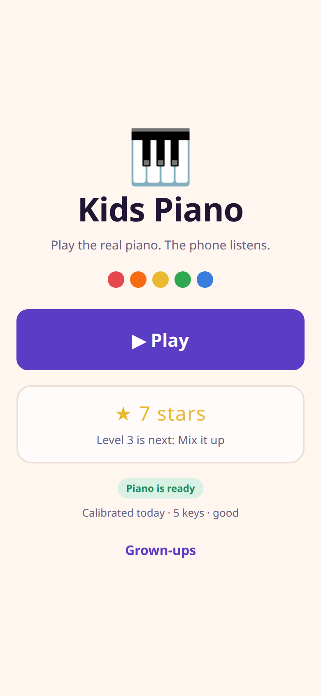
One enormous Play button, and almost nothing else. A child who cannot read should be able to start a session by pressing the only big thing on the screen.
The five coloured dots are the whole curriculum in one glance, and they match the stickers you can put on the real keys. The Grown-ups link is small on purpose: it is not for the child, and nothing behind it should look inviting to them.
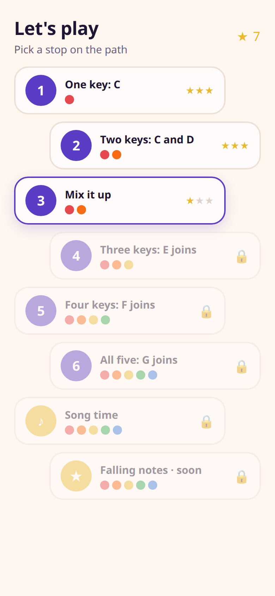
Shows the whole journey as stops on a path, so progress is visible rather than described. Tapping an unlocked stop starts that level.
The coloured dots do real work: at a glance you can see level 4 adds yellow (E) and level 6 adds blue (G). A child learns to expect the new colour.
The eighth stop reads “Falling notes · soon” because the game arrives in 0.7.0. In the 0.6.0 build the ladder ends at Song time.
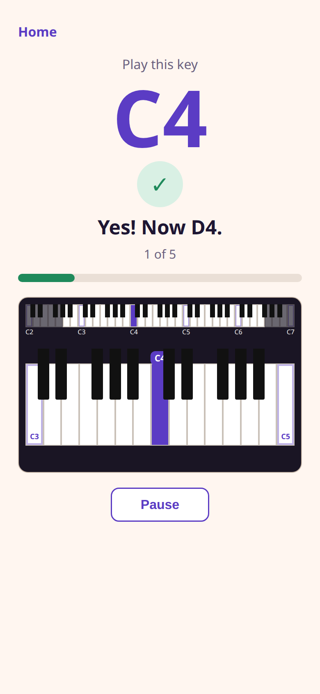
This is the direct answer to the problem you found: the app said “C” and there are six C keys on the PSR-F52. Now it says C4, and it shows you exactly which one.
A single 61-key strip was the first attempt and it failed: each white key came out about 9 dp wide, narrower than the black keys, and no label fit.
This screen still teaches all five keys in one run — the ladder has not arrived yet. It ships first because the export files depend on nothing else, and because it is what makes the next version testable.
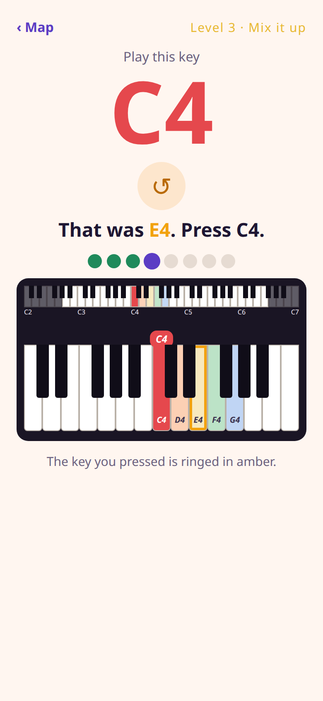
Runs one level of the ladder. The note name fills the top in that key’s colour, and the keyboard below shows both where the key is and what just happened.
This is the most important addition on the screen. Naming the wrong key in words only helps a child who reads. Lighting it up next to the target is what teaches the distance between C and E.
It stays lit after the finger lifts. The app internally forgets a press about a fifth of a second after release, so a ring tied to that would vanish before a child looked up.
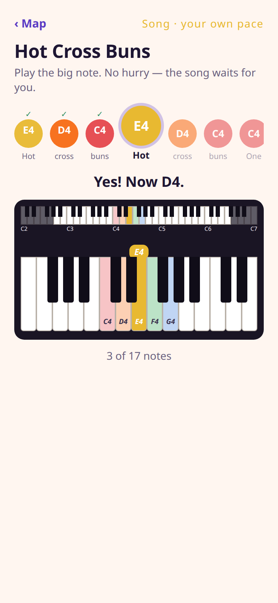
Walks through a real tune, one note at a time. This is the moment the five keys stop being an exercise and become music.
The song waits. There is no metronome and no timing score — the strip advances whenever the correct note arrives, however long that takes. A wrong note does not advance and does not end anything; it gets the same answer it would in a drill.
Rhythm is the falling game’s job. Asking a five-year-old to keep time on their first tune would turn the reward back into a test.
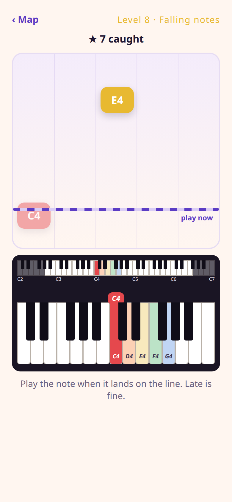
Coloured tiles drift down five lanes — one lane per key, left to right in pitch order — toward a line sitting on top of the keyboard. Your child plays each key as its tile lands.
Everything between the hammer and the app’s answer costs time: the microphone and capture buffer, the first audio block that lands after the note starts, and the three agreeing blocks the detector needs. That is around 200 milliseconds and it is always positive — the app is never early. An even window would hand a child a second of grace before the beat and only half a second after, and beginners are late, not early.
A missed tile fades and comes back once, at the end of the run. A wrong key is named and the tile keeps falling. Unclear audio is ignored entirely. There is no health bar, no lives, no miss tally and no “game over” — the counter shows catches only.
Stars come from catches, so standing in silence scores nothing rather than a perfect run.
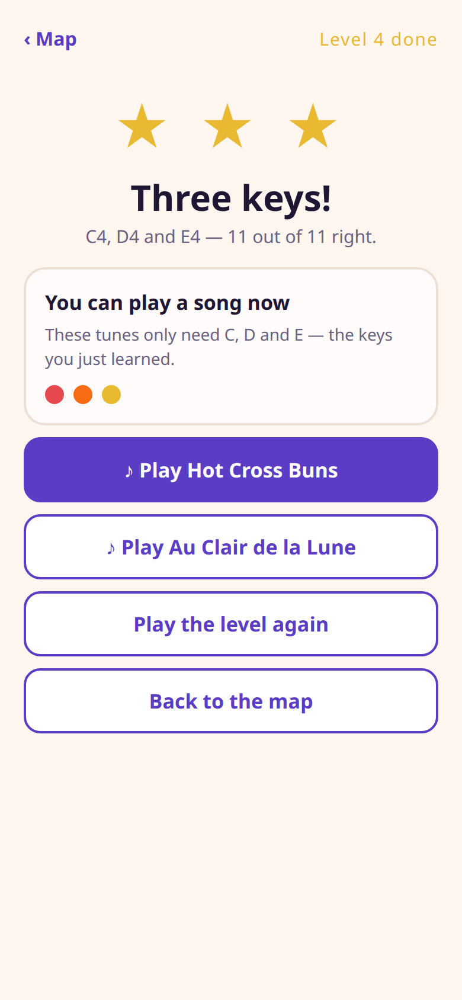
Closes the session with what was earned, and immediately offers something to do with it.
This is the payoff for the whole level. Finishing three keys is abstract; being told you can now play Hot Cross Buns is not. The song buttons only appear when the keys actually allow it, so the offer is never hollow.
If a level was stopped early but at least 80% answered, a star is still banked and this screen still appears. Quitting is never punished with a locked door.
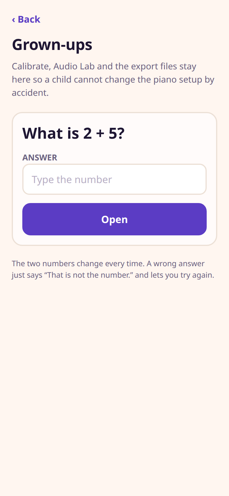
Asks a simple addition question before opening the setup tools. It is not security — it is a speed bump that a four-year-old cannot walk over by mashing buttons.
Behind this gate are Calibrate, Audio Lab and the export files. A child who wandered into Calibrate and pressed Start would overwrite the tuning profile the whole app depends on, and practice would start marking correct playing as wrong.
This screen is already in the version you installed and is unchanged by the new work.
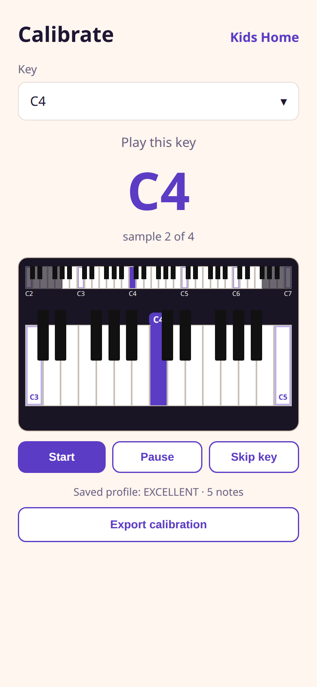
Measures what your piano actually sounds like. Play the named key four times; the app records the pitch it hears, how much it wobbles, and how confident it is. Repeat for five keys and it has a profile.
This is the fix for the control you reported as not working — it was missing, not broken. Picking a key jumps straight to it instead of forcing you through C, D, E, F, G in order.
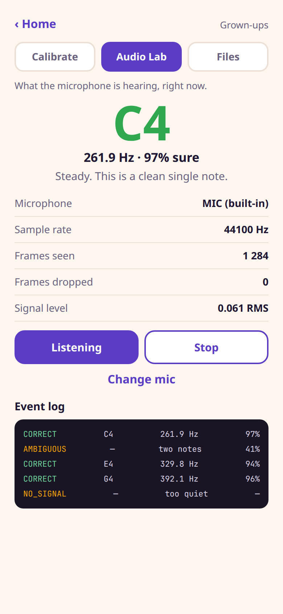
Shows you exactly what the microphone is hearing, with no lesson wrapped around it. If a child insists they played the right key, this is the screen that settles it.
Frames dropped above zero means the phone is struggling to keep up. AMBIGUOUS rows usually mean the sustain pedal is down or two keys overlap. NO_SIGNAL means the phone is too far from the piano — on a PSR-F52 the speaker is on top, so the phone should sit near it.
This screen is already in the version you installed and is unchanged by the new work.
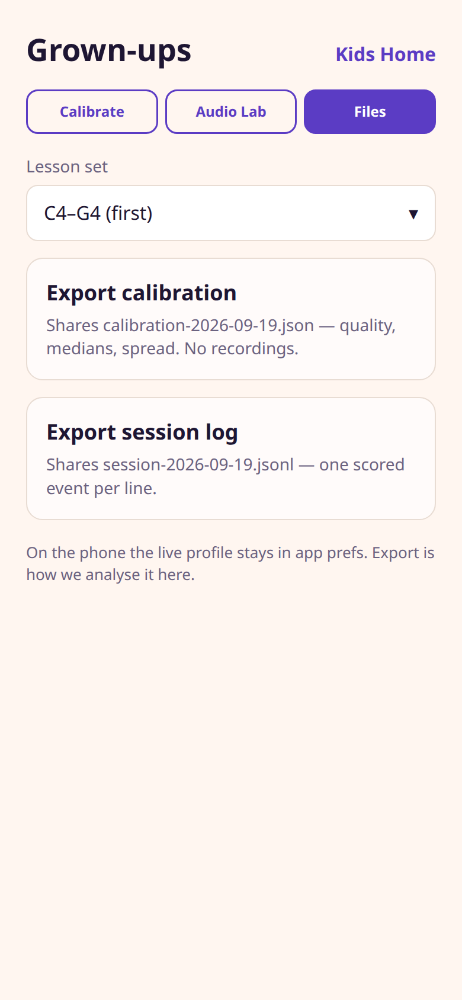
Answers your question about where the calibration lives and how to get it out. It is a third tab in Grown-ups, not a new section of the app.
The live profile sits in the app’s private preferences at
/data/data/com.vijaychhetry.kidspiano/shared_prefs/calibration.xml. That path is
unreadable on a normal phone without root, which is exactly why export exists.
calibration-2026-09-19.json — quality, and per key the measured pitch, the median, the spread and the sample count.session-2026-09-19.jsonl — one line per scored event: what was asked, what was heard, the confidence, the timestamp.Both go out through the normal Android share sheet, so they can go to email, Drive, or anywhere else. Neither contains any audio.
The Lesson set dropdown picks which five keys practice uses — C4–G4 by default, with a lower C3–G3 set for a piano whose upper register is hard for the phone to hear.
| Version | What lands | Screens |
|---|---|---|
| 0.5.0 | Note names with octaves, the two-layer keyboard guide, the Calibrate key dropdown, and the two export files. | 3, 9, 11 |
| 0.6.0 | The seven-level ladder, the six songs, key colours, stars, and an answer for every key press including ones too short to name. | 1, 2, 4, 5, 7 |
| 0.7.0 | The falling-notes game, with its timing set from a real measurement. | 6 |
It is the only feature whose correctness depends on how long the phone takes to hear a note, and every number in this document for that is arithmetic rather than measurement. 0.6.0 writes a session log with a timestamp on every judged press. Ship it, let your child use it next to the real PSR-F52, export the log, and the hit window can be set from your piano and your phone instead of an estimate.
The plan behind these screens was reviewed line by line against the existing code. That review found nine serious problems, all fixed before any code was written — among them a test that would have failed on its first run, a scoring rule that gave three stars to a child who played nothing at all, and a hit window that put its generosity on the wrong side of the beat.
Implementation is test-first: 48 new automated checks, each one required to fail if the feature it guards is broken. The rules that matter most — unclear audio is never wrong, a held key cannot answer twice, no level can be failed — each have their own test.
Look at the eleven screens and tell me what is wrong with them. Specifically worth your attention: is the drill screen (4) readable enough for your child at arm’s length; does the song screen (5) make sense without sheet music; is the level map (2) obvious enough that they can choose for themselves; and is the star rule generous enough that finishing feels good.
Nothing is built yet. Once you approve, 0.5.0 and 0.6.0 go in that order, each with the full test suite run and an installable APK, plus a short README on exporting the two files.